O Lobo da Longa NoiteThe Long Night Wolf
Guardião dos Salões. Uiva e a matilha responde.Guardian of the halls. He howls and the pack answers.
Consulta rápida do jogo. Busque lá em cima ou escolha um assunto.A quick reference for the game. Search above or pick a topic.
Houve um tempo em que treze deuses dividiam o mundo. Cada um tinha um domínio, e cada domínio tinha a cara do seu deus.There was a time when thirteen gods shared the world. Each had a domain, and each domain wore its god's face.
Numa noite sem nome, todos sumiram. Ao mesmo tempo. Ninguém viu para onde foram.On a nameless night, they all vanished. At the same time. No one saw where they went.
Os domínios ficaram. Sem dono, apodreceram do jeito de cada um: a cinza ficou sagrada, o inverno não acabou, a forja não parou, os mortos esqueceram o próprio nome, o sonho virou pesadelo.The domains remained. Ownerless, each rotted in its own way: The ash became sacred, the winter never ended, the forge never stopped, the dead forgot their names, the dream turned to nightmare.
Você acordou na beira do Mar de Cinzas, com um manto que não lembra de ter vestido. A Vigia te chama de Moksha e diz que você já esteve aqui antes. Muitas vezes.You woke at the edge of the sea of ash, in a cloak you do not remember putting on. The warden calls you moksha and says you have been here before. Many times.
Em algum lugar, no fim de tudo, está o Trono. Quem senta nele sabe o que aconteceu com os deuses.Somewhere, at the end of everything, stands the throne. Whoever sits on it knows what happened to the gods.
O Imperador Cego caiu. Pela primeira vez em mil anos, o Trono ficou vazio.The blind emperor has fallen. For the first time in a thousand years, the throne stands empty.
Você se senta. Por um instante, vê o que ele via: doze deuses, de mãos dadas, entrando numa porta de luz.You sit down. For an instant, you see what he saw: Twelve gods, hand in hand, walking into a door of light.
O décimo terceiro não entrou. O que se escondia viu tudo do fundo da terra e não contou a ninguém.The thirteenth did not go in. The one who hid saw it all from deep in the earth and told no one.
Não foram embora. Foram dormir. E o sonho deles é este mundo: cada domínio, um pesadelo de quem sonha.They did not leave. They went to sleep. And their dream is this world: Each domain, a nightmare of the one who dreams it.
Atrás da porta, uma voz que não é de deus nenhum: "Ainda não. Volte quando a brasa queimar mais."Behind the door, a voice that belongs to no god: "Not yet. Come back when the ember burns hotter."
A Vigia te encontra de novo na beira do Mar de Cinzas. "Você de novo. Ou outro igual a você."The warden finds you again at the edge of the sea of ash. "You again. Or another just like you."
Com todas as brasas acesas, a porta não resiste. Do outro lado não há luz nem deus dormindo.With every ember lit, the door gives way. On the other side there is no light, and no sleeping god.
O Imperador nunca viu nada. Arrancou os olhos para preferir outra história.The emperor never saw anything. He tore out his eyes so he could prefer another story.
Só há treze cadeiras. Em quase todas, uma brasa que não consegue apagar. Na última, alguém gravou o seu nome. Faz muito tempo.There are only thirteen chairs. On almost all of them, an ember that cannot go out. On the last, someone carved your name. A long time ago.
Você senta, e a cadeira te serve. Aqui ardeu um deus, e ninguém sabe qual. Foi você.You sit, and the chair fits you. A god burned here, and no one knows which. It was you.
Os treze apodreciam sem conseguir morrer. Você foi o primeiro a entender, e ateou fogo em si mesmo para virar cinza. A cinza esquece. Quem lembra não consegue matar os próprios irmãos.The thirteen were rotting, unable to die. You understood first, and set yourself on fire to become ash. Ash forgets. Whoever remembers cannot kill their own kin.
Você pediu a uma só pessoa que te refizesse, quantas vezes fosse preciso, e que nunca contasse. Ele sabia. E não contou a ninguém.You asked one person alone to remake you, as many times as it took, and never to tell. He knew. And he told no one.
Atrás de você, uma voz que você conhece. "Você de novo." A Serpe guardava um buraco vazio. O deus que se escondia se escondeu onde todo mundo olhava: debaixo do capuz da Vigia.Behind you, a voice you know. "You again." The wyrm guarded an empty hole. The god who hid was hiding where everyone looked: Under the watcher's hood.
Ela encheu seus frascos. Vendeu suas armas. Guardou a essência de cada irmão que você matou, e te refez da cinza a cada morte. "Ou outro igual a você." Eram todos você.She filled your flasks. Sold you your weapons. Kept the essence of every kin you killed, and remade you from ash at each death. "Or another just like you." They were all you.
Ela se senta na cadeira fria, e a brasa dela acende. "Foi o trato. Você apaga a última. Sozinha eu não consigo."She sits on the cold chair, and her ember lights. "That was the deal. You put out the last one. I cannot do it alone."
Moksha não é o seu nome. É a palavra que você pediu para ouvir a cada volta, até entender: soltar.Moksha is not your name. It is the word you asked to hear at every return, until you understood: Let go.
A última brasa se apaga na sua mão. Por baixo do capuz havia um rosto, afinal. Parecia descansado.The last ember goes out in your hand. There was a face under the hood after all. It looked rested.
Os doze não voltam. Ninguém mais sonha este mundo, e ele continua aqui. Fazia tempo que não precisava de deuses.The twelve do not come back. No one dreams this world anymore, and it is still here. It had long stopped needing gods.
Amanhece no Mar de Cinzas. O gelo pinga, as bigornas param, os mortos lembram os próprios nomes.Dawn breaks on the sea of ash. The ice drips, the anvils stop, the dead remember their own names.
Resta uma brasa: a sua. Não há mais ninguém para apagá-la. O manto da Vigia ficou de pé na beira do mar, e serve em você.One ember remains: Yours. There is no one left to put it out. The watcher's cloak stands at the edge of the sea, and it fits you.
Os doze descansam. Os pesadelos que eles sonhavam não souberam: continuam nos domínios, sonhando sozinhos.The twelve rest. The nightmares they dreamed never heard: They remain in the domains, dreaming alone.
Você veste o manto e volta. É o último deus, e ninguém mais vai fazer esse trabalho.You put on the cloak and go back. You are the last god, and no one else will do this work.
O Imperador cai de novo. Não era ele: era o pesadelo de um trono que ninguém mais quer.The emperor falls again. It was not him: It was the nightmare of a throne no one wants anymore.
Em algum domínio, nesta noite, ninguém sonhou nada. Ainda há o que soltar.In some domain, this night, no one dreamed anything. There is still more to let go.
Um por deus. Depois do Mar de Cinzas, cada um termina no guardião; aí, na passagem, você escolhe entre três caminhos. Morreu, volta ao Mar de Cinzas.One per god. After the Sea of Ash, each ends with its guardian; then, in the passage, you pick one of three paths. Die, and you wake on the Sea of Ash.
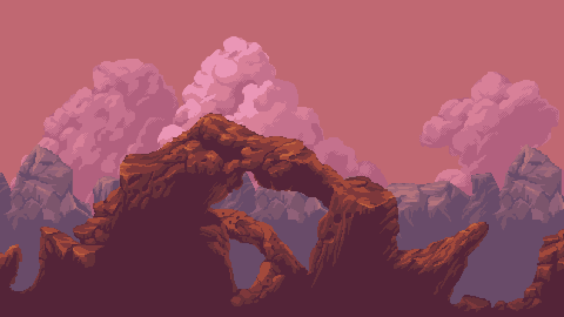
01O Mar de CinzasThe Sea of AshJulga em nome de um deus que não responde mais. Salta e cai onde você está.Judges in the name of a god who no longer answers. Leaps and lands where you stand.
Peregrinos que juraram carregar a culpa do mundo. A clava é a culpa.Pilgrims who swore to carry the world's guilt. The club is the guilt.
Soldados das Casas do Mar de Cinzas. O escudo protege a frente; as costas, ninguém.Soldiers of the houses of the sea of ash. The shield guards the front; nothing guards the back.
Vem para arder. Acredita que quem queima vira parte do deus.Comes to burn. Believes that whoever burns becomes part of the god.
Nada sob a cinza. O volume que se mexe no chão é ele.Swims beneath the ash. The bulge moving in the ground is him.
Atira lascas de fulgurante. A mira trava um instante antes do disparo.Shoots fulgurite shards. The aim locks an instant before the shot.
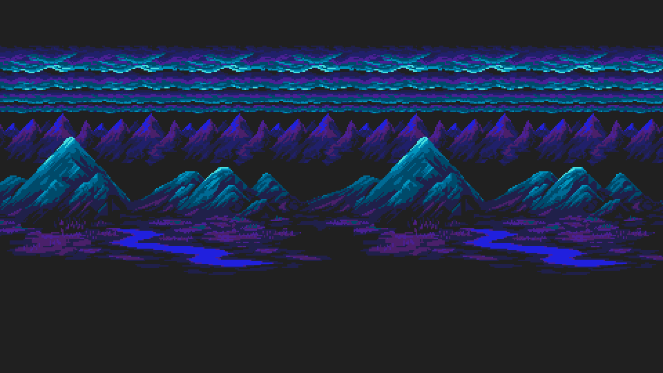
02Os Salões do Último InvernoThe Halls of the Last WinterGuardião dos Salões. Uiva e a matilha responde.Guardian of the halls. He howls and the pack answers.
Elite dos Salões. Lanças de gelo e uma investida certeira.Halls elite. Ice spears and a precise charge.
Guarda a porta de um dono que não volta. Abaixa antes do bote.Guards the door for a master who never returns. Crouches before it pounces.
Peregrinos que juraram carregar a culpa do mundo. A clava é a culpa.Pilgrims who swore to carry the world's guilt. The club is the guilt.
Soldados das Casas do Mar de Cinzas. O escudo protege a frente; as costas, ninguém.Soldiers of the houses of the sea of ash. The shield guards the front; nothing guards the back.
Nada sob a cinza. O volume que se mexe no chão é ele.Swims beneath the ash. The bulge moving in the ground is him.
Foi gente. O gelo não lembra quem. Atira em leque.Was someone once. The ice does not remember who. Shoots in a fan.
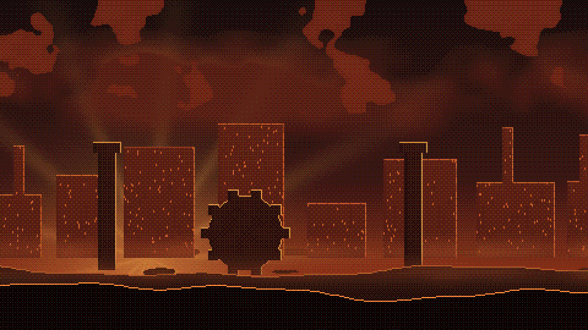
03A Forja RubraThe Crimson ForgeGuardião da Forja. O ferreiro que o deus esqueceu ligado.Guardian of the forge. The smith the god forgot to turn off.
Elite da Forja. A martelada solta ondas pelo chão.Forge elite. Each hammer blow sends waves along the ground.
Esqueceu o próprio nome; lembra só a medida certa do aço.Forgot his own name; remembers only the right measure of steel.
O metal que não quis virar arma. Pula, queima e vira poça.Metal that refused to become a weapon. It hops, burns, and melts into a puddle.
Soldados das Casas do Mar de Cinzas. O escudo protege a frente; as costas, ninguém.Soldiers of the houses of the sea of ash. The shield guards the front; nothing guards the back.
Peregrinos que juraram carregar a culpa do mundo. A clava é a culpa.Pilgrims who swore to carry the world's guilt. The club is the guilt.
Atira lascas de fulgurante. A mira trava um instante antes do disparo.Shoots fulgurite shards. The aim locks an instant before the shot.
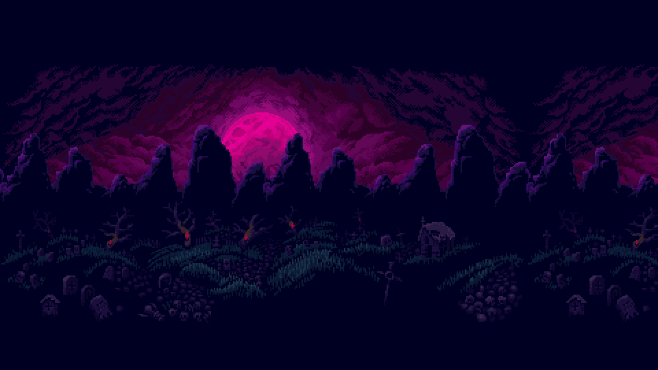
04A NecrópoleThe NecropolisGuardião da Necrópole. Lembra de todos os mortos, menos de si mesmo. Com os mortos de pé, quase não sente.Keeper of the necropolis. He remembers all the dead but himself. While the dead stand, he barely feels a thing.
Elite da Necrópole. Lê o nome dos mortos em voz alta, e eles levantam.Elite of the necropolis. Reads the names of the dead aloud, and they rise.
Dorme na própria cova até ouvir passos. Matar uma vez não basta: ele volta para a terra e levanta de novo.Sleeps in its own grave until it hears footsteps. Killing it once isn't enough: It goes back into the earth and rises again.
Chora por todos os mortos da Necrópole. Não lembra por quem. Mergulha, e depois do mergulho vem o lamento.She weeps for all the dead of the necropolis. She doesn't remember who they were. She dives, and after the dive comes the wail.
O gato-sombra que come as oferendas. Nunca dá um bote só.The shadow cat that eats the offerings. It never pounces just once.
Peregrinos que juraram carregar a culpa do mundo. A clava é a culpa.Pilgrims who swore to carry the world's guilt. The club is the guilt.
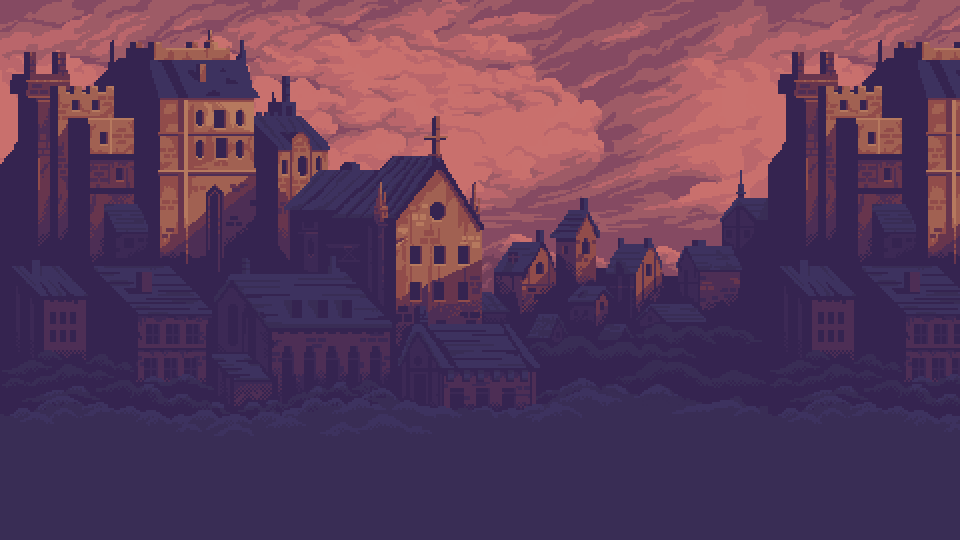
05A Torre de BabelThe Tower of BabelGuardião da Torre. Ergueu a torre e esqueceu a própria língua.Guardian of the tower. Raised the tower and forgot his own tongue.
Elite da Torre. Lê os livros com os dedos e escreve glifos que perseguem.Tower elite. Reads books with his fingers and writes glyphs that hunt.
Guardas que viraram pedra esperando a ordem de parar. Mergulham em diagonal.Guards who turned to stone waiting for the order to stand down. They dive diagonally.
Copia o mesmo livro há mil anos. O glifo que escreve te persegue.Has copied the same book for a thousand years. The glyph he writes hunts you.
Ainda sobe a Torre tijolo por tijolo. De longe atira o tijolo em arco; de perto, bate com ele.Still builds the tower brick by brick. From afar he lobs the brick; up close, he hits you with it.
Soldados das Casas do Mar de Cinzas. O escudo protege a frente; as costas, ninguém.Soldiers of the houses of the sea of ash. The shield guards the front; nothing guards the back.
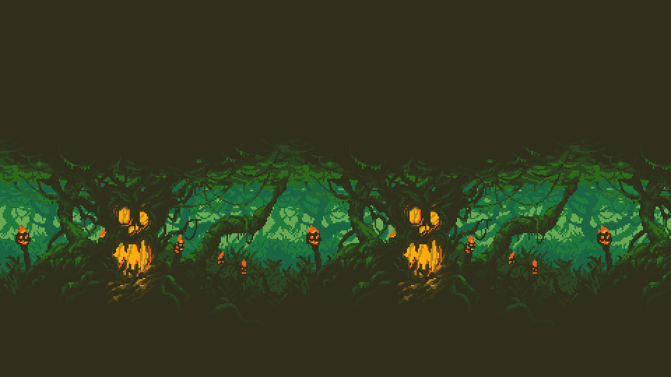
06O Jardim PrimordialThe Primordial GardenGuardiã do Jardim. Tudo que cresce aqui nasceu dela.Guardian of the garden. Everything that grows here was born of her.
Elite do Jardim. Faz o chão crescer contra você.Garden elite. Makes the ground grow against you.
Não come. Só cresce por cima do que encontra. Investe em linha reta.Does not eat. Just grows over whatever it finds. Charges in a straight line.
Aponta sempre para quem respira. Abre a flor antes de atirar.Always points at whatever breathes. The flower opens before it fires.
Finca as raízes perto de quem respira e incha. Bata antes que estoure.Roots itself near whatever breathes and swells. Hit it before it bursts.
Guarda a porta de um dono que não volta. Abaixa antes do bote.Guards the door for a master who never returns. Crouches before it pounces.
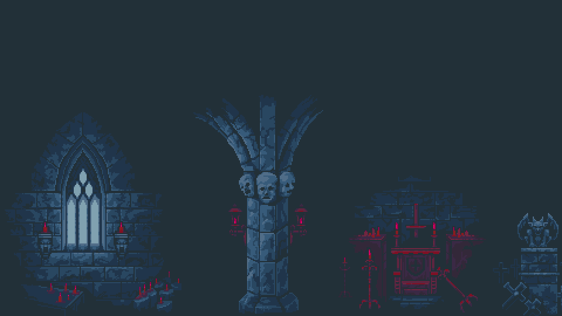
07A Catedral SubmersaThe Sunken CathedralGuardião da Catedral. Alguém ouviu as preces. Não era o deus. Bata demais ou beba o frasco, e ele responde.Keeper of the cathedral. Someone heard the prayers. It wasn't the god. Hit it too much or drink your flask, and it answers.
Elite da Catedral. Ainda reza a missa; a água obedece.Elite of the cathedral. She still says mass; the water obeys.
Desceu rezando e não quis subir. A pancada faz a água subir um pouco adiante.Went down praying and wouldn't come back up. Its blow makes the water rise a little further on.
Jurou guardar a nave da Catedral. De longe, atropela de escudo. As costas continuam abertas.Swore to guard the cathedral's nave. From afar, it rams with its shield. Its back is still open.
Uma prece que ficou boiando e aprendeu a mirar. Junto do choque saem duas luzes que seguem você.A prayer that kept floating and learned to aim. With each bolt come two lights that follow you.
Atira lascas de fulgurante. A mira trava um instante antes do disparo.Shoots fulgurite shards. The aim locks an instant before the shot.
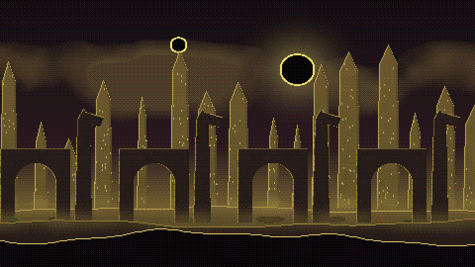
08CarcosaCarcosaGuardião de Carcosa. A máscara caiu; não havia nada embaixo.Guardian of carcosa. The mask fell; there was nothing beneath.
Elite de Carcosa. Rápido, some, aparece, corta.Carcosa elite. Fast. Vanishes, appears, cuts.
Em Carcosa todos usam máscara. Este some e aparece atrás de você.In carcosa everyone wears a mask. This one vanishes and appears behind you.
Anuncia um rei que nunca chega. O sino chama almas que explodem.Heralds a king who never comes. The bell calls souls that burst.
Gira no lugar e atravessa a sala num rodopio. Depois fica tonto.Spins in place, then whirls across the room. Afterward it is dizzy.
Nada sob a cinza. O volume que se mexe no chão é ele.Swims beneath the ash. The bulge moving in the ground is him.
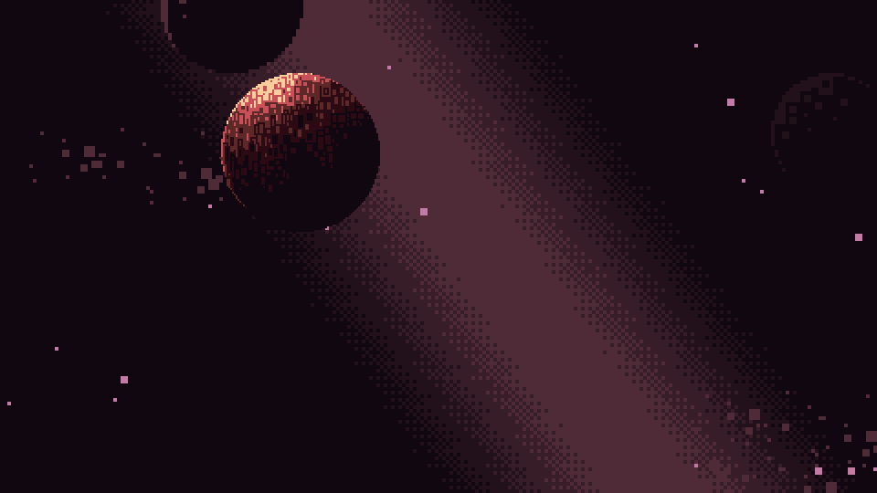
09O Observatório CelesteThe Celestial ObservatoryGuardião do Observatório. Contou as estrelas até elas acabarem.Guardian of the observatory. Counted the stars until there were none left.
Elite do Observatório. Raios e estrelas em volta.Observatory elite. Beams and stars all around.
Mede o céu para ninguém. O olho acende antes do raio.Measures the sky for no one. The eye lights up before the beam.
Um nome que o deus esqueceu. Pisca antes de explodir.A name the god forgot. It flickers before it explodes.
Um olho de vidro que mira de qualquer ângulo. Quando o fio fica vermelho, saia da linha.A glass eye that aims from any angle. When the thread turns red, get out of the line.
Foi gente. O gelo não lembra quem. Atira em leque.Was someone once. The ice does not remember who. Shoots in a fan.
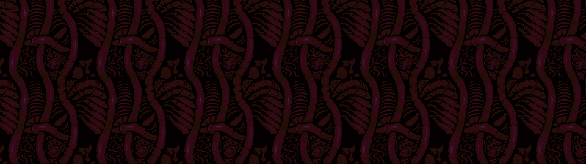
10O VentreThe BellyGuardião do Ventre. O deus que devorava comeu até a própria fome. Inspira, puxa, e larva na boca vira vida.Keeper of the belly. The god who devoured ate even its own hunger. It breathes in, pulls, and any larva in its mouth becomes life.
Elite do Ventre. O primeiro que o deus engoliu. Ficou lá dentro, comendo.Elite of the belly. The first one the god swallowed. He stayed inside, eating.
Pula atrás de você e queima com ácido. Cortada, vira duas e uma poça.Hops after you and burns with acid. Cut down, it becomes two and a puddle.
Uma das últimas coisas que o deus engoliu. Se o bote pega, gruda e suga. Role para soltar.One of the last things the god swallowed. If its pounce lands, it clings and drains. Roll to shake it off.
Raiz de carne do Ventre. De longe cospe dentes; de perto, varre os dois lados.A root of flesh in the belly. From afar it spits teeth; up close, it sweeps both sides.
O metal que não quis virar arma. Pula, queima e vira poça.Metal that refused to become a weapon. It hops, burns, and melts into a puddle.
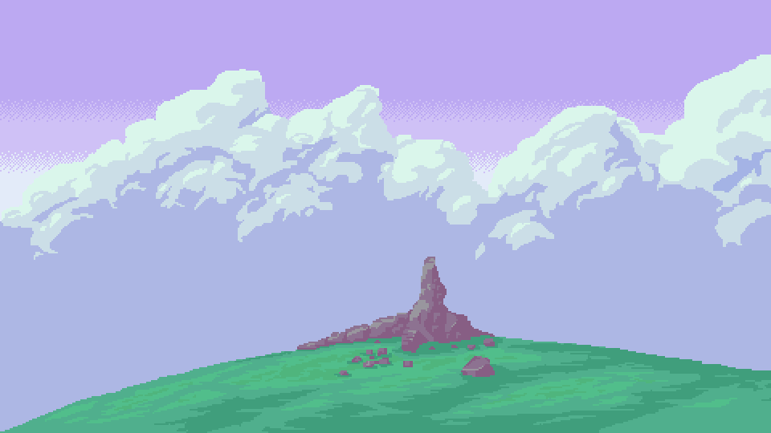
11Os Penhascos do SonhoThe Dream CliffsGuardião dos Penhascos. O deus sonhou um guarda para não ser acordado. Some do mundo e cai do alto.Keeper of the cliffs. The god dreamed a guard so it would not be woken. It leaves the world and falls from above.
Elite dos Penhascos. Ela sonha que luta, e você está no sonho dela.Elite of the cliffs. She dreams she is fighting, and you are in her dream.
Atira dormindo, e não para de andar. Três flechas de cada vez.Shoots in her sleep and never stops walking. Three arrows at a time.
Corre por cima de quem dorme. Onde ele passa, o chão queima logo depois.It runs over those who sleep. Where it passes, the ground burns right after.
Some duas vezes seguidas, e o lugar de onde saiu estoura.Vanishes twice in a row, and the place it left bursts.
Guardas que viraram pedra esperando a ordem de parar. Mergulham em diagonal.Guards who turned to stone waiting for the order to stand down. They dive diagonally.
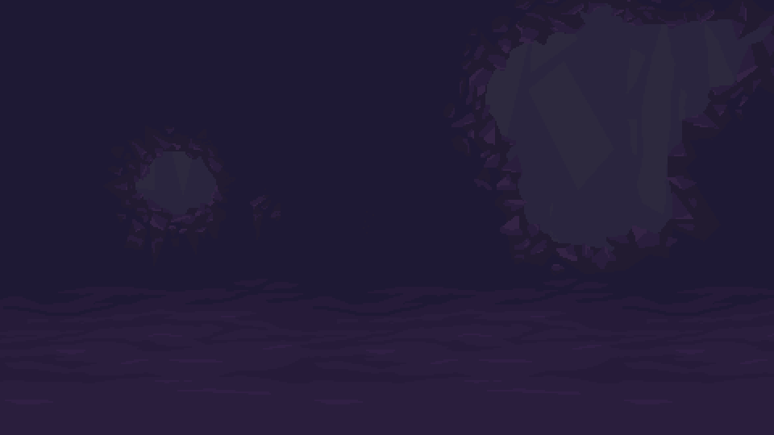
12As Cavernas FundasThe Deep CavernsGuardiã das Cavernas. Deixada na porta para ninguém descer mais. Cava atrás de você e sai numa coluna de pedra.Keeper of the caverns. Left at the door so no one else would go down. It digs after you and bursts out in a column of stone.
Elite das Cavernas. Desceu atrás do deus e não quis mais subir.Elite of the caverns. Went down after the god and would not come back up.
Nunca viu a luz. Só sabe de quem se mexe. Parado, você não existe; andando, a língua alcança longe.Never saw the light. It only knows what moves. Stand still and you don't exist; walk, and the tongue reaches far.
Mora na fenda do chão. Antes de voltar para lá, cospe veneno em arco.Lives in the crack in the ground. Before going back, it spits venom in an arc.
Cava atrás do deus escondido há tanto tempo que esqueceu por quê. Joga bomba de longe e se acende de perto.Has dug after the hidden god for so long it forgot why. Throws bombs from afar and lights itself up close.
Ainda sobe a Torre tijolo por tijolo. De longe atira o tijolo em arco; de perto, bate com ele.Still builds the tower brick by brick. From afar he lobs the brick; up close, he hits you with it.
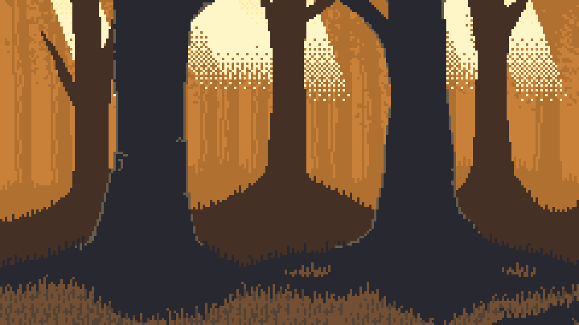
13O Bosque ErranteThe Wandering ForestGuardiã do Bosque. Ia sempre na frente do deus que caminhava. Ainda vai.Guardian of the forest. Always went ahead of the god who walked. It still does.
Elite do Bosque. Cobra pedágio de quem passa. Ninguém tem com que pagar.Elite of the forest. Charges a toll to all who pass. No one has anything to pay with.
Cobra a passagem na estrada do Bosque. O corte leva ouro e ele foge. Quem alcança pega de volta.Charges a toll on the forest road. The cut takes gold and he runs. Catch him and you get it back.
Seguiu o deus que caminhava e esqueceu a volta. Três golpes, e esquece o que estava fazendo.Followed the god who walked and forgot the way back. Three blows, and he forgets what he was doing.
Anda aos saltos, e a queda bate no chão em volta. De longe, cospe pedra.Moves in leaps, and each landing strikes the ground around it. From afar, it spits stone.
Guarda a porta de um dono que não volta. Abaixa antes do bote.Guards the door for a master who never returns. Crouches before it pounces.
Todo golpe é avisado. A cada três golpes eles param, exaustos: é a sua janela. Com metade da vida, mudam de fase.Every attack is telegraphed. Every third attack they stop, exhausted: that is your window. At half health, they change phase.
Guardião dos Salões. Uiva e a matilha responde.Guardian of the halls. He howls and the pack answers.
Guardião da Forja. O ferreiro que o deus esqueceu ligado.Guardian of the forge. The smith the god forgot to turn off.
Guardião da Necrópole. Lembra de todos os mortos, menos de si mesmo. Com os mortos de pé, quase não sente.Keeper of the necropolis. He remembers all the dead but himself. While the dead stand, he barely feels a thing.
Guardião da Torre. Ergueu a torre e esqueceu a própria língua.Guardian of the tower. Raised the tower and forgot his own tongue.
Guardiã do Jardim. Tudo que cresce aqui nasceu dela.Guardian of the garden. Everything that grows here was born of her.
Guardião da Catedral. Alguém ouviu as preces. Não era o deus. Bata demais ou beba o frasco, e ele responde.Keeper of the cathedral. Someone heard the prayers. It wasn't the god. Hit it too much or drink your flask, and it answers.
Guardião de Carcosa. A máscara caiu; não havia nada embaixo.Guardian of carcosa. The mask fell; there was nothing beneath.
Guardião do Observatório. Contou as estrelas até elas acabarem.Guardian of the observatory. Counted the stars until there were none left.
Guardião do Ventre. O deus que devorava comeu até a própria fome. Inspira, puxa, e larva na boca vira vida.Keeper of the belly. The god who devoured ate even its own hunger. It breathes in, pulls, and any larva in its mouth becomes life.
Guardião dos Penhascos. O deus sonhou um guarda para não ser acordado. Some do mundo e cai do alto.Keeper of the cliffs. The god dreamed a guard so it would not be woken. It leaves the world and falls from above.
Guardiã das Cavernas. Deixada na porta para ninguém descer mais. Cava atrás de você e sai numa coluna de pedra.Keeper of the caverns. Left at the door so no one else would go down. It digs after you and bursts out in a column of stone.
Guardiã do Bosque. Ia sempre na frente do deus que caminhava. Ainda vai.Guardian of the forest. Always went ahead of the god who walked. It still does.
Arrancou os olhos para ver o futuro. Senta no Trono há mil anos.Tore out his eyes to see the future. He has sat on the throne for a thousand years.
Desceu rezando e não quis subir. A pancada faz a água subir um pouco adiante.Went down praying and wouldn't come back up. Its blow makes the water rise a little further on.
A Catedral SubmersaThe Sunken CathedralSeguiu o deus que caminhava e esqueceu a volta. Três golpes, e esquece o que estava fazendo.Followed the god who walked and forgot the way back. Three blows, and he forgets what he was doing.
O Bosque ErranteThe Wandering ForestAnuncia um rei que nunca chega. O sino chama almas que explodem.Heralds a king who never comes. The bell calls souls that burst.
CarcosaCarcosaNada sob a cinza. O volume que se mexe no chão é ele.Swims beneath the ash. The bulge moving in the ground is him.
O Mar de CinzasThe Sea of Ash · Os Salões do Último InvernoThe Halls of the Last Winter · CarcosaCarcosaAtira lascas de fulgurante. A mira trava um instante antes do disparo.Shoots fulgurite shards. The aim locks an instant before the shot.
O Mar de CinzasThe Sea of Ash · A Forja RubraThe Crimson Forge · A Catedral SubmersaThe Sunken CathedralMede o céu para ninguém. O olho acende antes do raio.Measures the sky for no one. The eye lights up before the beam.
O Observatório CelesteThe Celestial ObservatoryElite da Torre. Lê os livros com os dedos e escreve glifos que perseguem.Tower elite. Reads books with his fingers and writes glyphs that hunt.
A Torre de BabelThe Tower of BabelFinca as raízes perto de quem respira e incha. Bata antes que estoure.Roots itself near whatever breathes and swells. Hit it before it bursts.
O Jardim PrimordialThe Primordial GardenElite dos Salões. Lanças de gelo e uma investida certeira.Halls elite. Ice spears and a precise charge.
Os Salões do Último InvernoThe Halls of the Last WinterChora por todos os mortos da Necrópole. Não lembra por quem. Mergulha, e depois do mergulho vem o lamento.She weeps for all the dead of the necropolis. She doesn't remember who they were. She dives, and after the dive comes the wail.
A NecrópoleThe NecropolisJurou guardar a nave da Catedral. De longe, atropela de escudo. As costas continuam abertas.Swore to guard the cathedral's nave. From afar, it rams with its shield. Its back is still open.
A Catedral SubmersaThe Sunken CathedralElite da Necrópole. Lê o nome dos mortos em voz alta, e eles levantam.Elite of the necropolis. Reads the names of the dead aloud, and they rise.
A NecrópoleThe NecropolisGira no lugar e atravessa a sala num rodopio. Depois fica tonto.Spins in place, then whirls across the room. Afterward it is dizzy.
CarcosaCarcosaElite de Carcosa. Rápido, some, aparece, corta.Carcosa elite. Fast. Vanishes, appears, cuts.
CarcosaCarcosaElite das Cavernas. Desceu atrás do deus e não quis mais subir.Elite of the caverns. Went down after the god and would not come back up.
As Cavernas FundasThe Deep CavernsCava atrás do deus escondido há tanto tempo que esqueceu por quê. Joga bomba de longe e se acende de perto.Has dug after the hidden god for so long it forgot why. Throws bombs from afar and lights itself up close.
As Cavernas FundasThe Deep CavernsO metal que não quis virar arma. Pula, queima e vira poça.Metal that refused to become a weapon. It hops, burns, and melts into a puddle.
A Forja RubraThe Crimson Forge · O VentreThe BellyCopia o mesmo livro há mil anos. O glifo que escreve te persegue.Has copied the same book for a thousand years. The glyph he writes hunts you.
A Torre de BabelThe Tower of BabelAponta sempre para quem respira. Abre a flor antes de atirar.Always points at whatever breathes. The flower opens before it fires.
O Jardim PrimordialThe Primordial GardenUm nome que o deus esqueceu. Pisca antes de explodir.A name the god forgot. It flickers before it explodes.
O Observatório CelesteThe Celestial ObservatoryNão come. Só cresce por cima do que encontra. Investe em linha reta.Does not eat. Just grows over whatever it finds. Charges in a straight line.
O Jardim PrimordialThe Primordial GardenEsqueceu o próprio nome; lembra só a medida certa do aço.Forgot his own name; remembers only the right measure of steel.
A Forja RubraThe Crimson ForgeO gato-sombra que come as oferendas. Nunca dá um bote só.The shadow cat that eats the offerings. It never pounces just once.
A NecrópoleThe NecropolisGuardas que viraram pedra esperando a ordem de parar. Mergulham em diagonal.Guards who turned to stone waiting for the order to stand down. They dive diagonally.
A Torre de BabelThe Tower of Babel · Os Penhascos do SonhoThe Dream CliffsElite do Ventre. O primeiro que o deus engoliu. Ficou lá dentro, comendo.Elite of the belly. The first one the god swallowed. He stayed inside, eating.
O VentreThe BellySoldados das Casas do Mar de Cinzas. O escudo protege a frente; as costas, ninguém.Soldiers of the houses of the sea of ash. The shield guards the front; nothing guards the back.
O Mar de CinzasThe Sea of Ash · Os Salões do Último InvernoThe Halls of the Last Winter · A Forja RubraThe Crimson Forge · A Torre de BabelThe Tower of BabelElite do Jardim. Faz o chão crescer contra você.Garden elite. Makes the ground grow against you.
O Jardim PrimordialThe Primordial GardenSome duas vezes seguidas, e o lugar de onde saiu estoura.Vanishes twice in a row, and the place it left bursts.
Os Penhascos do SonhoThe Dream CliffsJulga em nome de um deus que não responde mais. Salta e cai onde você está.Judges in the name of a god who no longer answers. Leaps and lands where you stand.
O Mar de CinzasThe Sea of AshNunca viu a luz. Só sabe de quem se mexe. Parado, você não existe; andando, a língua alcança longe.Never saw the light. It only knows what moves. Stand still and you don't exist; walk, and the tongue reaches far.
As Cavernas FundasThe Deep CavernsElite dos Penhascos. Ela sonha que luta, e você está no sonho dela.Elite of the cliffs. She dreams she is fighting, and you are in her dream.
Os Penhascos do SonhoThe Dream CliffsPula atrás de você e queima com ácido. Cortada, vira duas e uma poça.Hops after you and burns with acid. Cut down, it becomes two and a puddle.
O VentreThe BellyUm olho de vidro que mira de qualquer ângulo. Quando o fio fica vermelho, saia da linha.A glass eye that aims from any angle. When the thread turns red, get out of the line.
O Observatório CelesteThe Celestial ObservatoryGuarda a porta de um dono que não volta. Abaixa antes do bote.Guards the door for a master who never returns. Crouches before it pounces.
Os Salões do Último InvernoThe Halls of the Last Winter · O Jardim PrimordialThe Primordial Garden · O Bosque ErranteThe Wandering ForestEm Carcosa todos usam máscara. Este some e aparece atrás de você.In carcosa everyone wears a mask. This one vanishes and appears behind you.
CarcosaCarcosaElite da Forja. A martelada solta ondas pelo chão.Forge elite. Each hammer blow sends waves along the ground.
A Forja RubraThe Crimson ForgeDorme na própria cova até ouvir passos. Matar uma vez não basta: ele volta para a terra e levanta de novo.Sleeps in its own grave until it hears footsteps. Killing it once isn't enough: It goes back into the earth and rises again.
A NecrópoleThe NecropolisUma das últimas coisas que o deus engoliu. Se o bote pega, gruda e suga. Role para soltar.One of the last things the god swallowed. If its pounce lands, it clings and drains. Roll to shake it off.
O VentreThe BellyAinda sobe a Torre tijolo por tijolo. De longe atira o tijolo em arco; de perto, bate com ele.Still builds the tower brick by brick. From afar he lobs the brick; up close, he hits you with it.
A Torre de BabelThe Tower of Babel · As Cavernas FundasThe Deep CavernsPeregrinos que juraram carregar a culpa do mundo. A clava é a culpa.Pilgrims who swore to carry the world's guilt. The club is the guilt.
O Mar de CinzasThe Sea of Ash · Os Salões do Último InvernoThe Halls of the Last Winter · A Forja RubraThe Crimson Forge · A NecrópoleThe NecropolisVem para arder. Acredita que quem queima vira parte do deus.Comes to burn. Believes that whoever burns becomes part of the god.
O Mar de CinzasThe Sea of AshCorre por cima de quem dorme. Onde ele passa, o chão queima logo depois.It runs over those who sleep. Where it passes, the ground burns right after.
Os Penhascos do SonhoThe Dream CliffsUma prece que ficou boiando e aprendeu a mirar. Junto do choque saem duas luzes que seguem você.A prayer that kept floating and learned to aim. With each bolt come two lights that follow you.
A Catedral SubmersaThe Sunken CathedralElite da Catedral. Ainda reza a missa; a água obedece.Elite of the cathedral. She still says mass; the water obeys.
A Catedral SubmersaThe Sunken CathedralCobra a passagem na estrada do Bosque. O corte leva ouro e ele foge. Quem alcança pega de volta.Charges a toll on the forest road. The cut takes gold and he runs. Catch him and you get it back.
O Bosque ErranteThe Wandering ForestAnda aos saltos, e a queda bate no chão em volta. De longe, cospe pedra.Moves in leaps, and each landing strikes the ground around it. From afar, it spits stone.
O Bosque ErranteThe Wandering ForestFoi gente. O gelo não lembra quem. Atira em leque.Was someone once. The ice does not remember who. Shoots in a fan.
Os Salões do Último InvernoThe Halls of the Last Winter · O Observatório CelesteThe Celestial ObservatoryElite do Observatório. Raios e estrelas em volta.Observatory elite. Beams and stars all around.
O Observatório CelesteThe Celestial ObservatoryMora na fenda do chão. Antes de voltar para lá, cospe veneno em arco.Lives in the crack in the ground. Before going back, it spits venom in an arc.
As Cavernas FundasThe Deep CavernsAtira dormindo, e não para de andar. Três flechas de cada vez.Shoots in her sleep and never stops walking. Three arrows at a time.
Os Penhascos do SonhoThe Dream CliffsRaiz de carne do Ventre. De longe cospe dentes; de perto, varre os dois lados.A root of flesh in the belly. From afar it spits teeth; up close, it sweeps both sides.
O VentreThe BellyElite do Bosque. Cobra pedágio de quem passa. Ninguém tem com que pagar.Elite of the forest. Charges a toll to all who pass. No one has anything to pay with.
O Bosque ErranteThe Wandering ForestDuas por vez. As que caem podem vir com afixos (brasa, geada, vampira...). Planta entregue à Vigia faz a arma aparecer nas partidas.Two at a time. Drops may roll affixes (ember, frost, vampiric...). Deliver a blueprint to the Watcher and the weapon starts showing up in runs.
Forjada para os desfiles das Casas do Mar de Cinzas. Nunca devia ter visto sangue. Viu.Forged for the parades of the houses of the sea of ash. It was never meant to see blood. It did.
Corda de tendão de besta-de-areia. Acerta melhor quem tem paciência para esperar a distância certa.A sandbeast-sinew string. It rewards whoever waits for the right distance.
Os peregrinos caminham até o centro do deserto apoiados nela. Poucos voltam. As lanças sempre voltam.The pilgrims walk to the heart of the desert leaning on it. Few return. The spears always do.
Na Casa Vesper, a sentença era lida pelo cego e executada pelo surdo. Assim ninguém ouvia o perdão.In house vesper, the sentence was read by the blind and carried out by the deaf. So no one ever heard the pardon.
As pontas são mergulhadas em Cinza Sagrada. O que ela toca lembra que um deus ardeu aqui.The tips are dipped in sacred ash. Whatever it touches remembers a god burned here.
Um par de assassinos da duna usava uma cada. Quando um morreu, o outro passou a usar as duas.A pair of dune assassins each carried one. When one died, the other took both.
Os ferreiros cativos não largam os seus. Este foi tirado de uma mão que ainda estava quente.The captive smiths never let go of theirs. This one was taken from a hand that was still warm.
A corda é um fio de gelo que nunca derrete. A flecha chega antes do frio.The string is a thread of ice that never melts. The arrow arrives before the cold.
Trançado com um galho que ainda cresce. Cada vez que estala, fica um pouco mais comprido.Braided from a branch that is still growing. Every crack makes it a little longer.
O ceifeiro dos Salões colhia o trigo que nunca nasceu. Gira para os dois lados, como quem não sabe de onde vem o frio.The reaper of the halls harvested wheat that never sprouted. It swings both ways, like someone who does not know where the cold comes from.
Mãos de um autômato do Observatório, desparafusadas com paciência. Ainda contam os golpes em voz baixa.The hands of an observatory automaton, patiently unscrewed. They still count the blows under their breath.
Três virotes amarelos de uma vez. Em Carcosa ninguém mira: atira-se em tudo que tem rosto.Three yellow bolts at once. In carcosa no one aims: They shoot at anything with a face.
Aponta para onde o deus estava. O que sai dele procura alguém para acertar, como o astrônomo procurava.It points where the god used to be. What comes out seeks someone to hit, as the astronomer once sought.
Costela e tendão de alguém que pediu para ser útil depois de morto.Rib and tendon of someone who asked to be useful after death.
Atira duas flechas: uma para pedir, outra para agradecer. As duas acertam.Shoots two arrows: One to ask, one to thank. Both hit.
Duas chamas-fátuas por disparo. Como a raposa, vão na frente e não param de procurar.Two will-o'-wisps per shot. Like the fox, they go ahead and never stop searching.
A Sonâmbula atirava dormindo e nunca errava. A flecha sabe onde você queria acertar.The sleepwalker shot in her sleep and never missed. The arrow knows where you meant to hit.
Gasto na ponta de tanto apontar caminhos. Todos errados, mas com convicção.Worn at the tip from pointing the way. Always wrong, but with conviction.
O Chamador lia os nomes dos mortos com ele. Cada glifo que sai é um nome procurando o dono.The caller read the names of the dead with it. Each glyph it casts is a name looking for its owner.
Feita com os votos de ouro que ninguém veio buscar. Cada pancada é uma promessa cumprida.Made from golden vows no one came to claim. Every blow is a promise kept.
O primeiro que o deus engoliu cortava a própria comida com isto. Por dentro do deus, nunca faltou.The first one the god swallowed cut his own food with this. Inside the god, there was always enough.
Um punhado de dentes que caíram da Goela. Jogados, voltam a morder.A handful of teeth from the gullet. Thrown, they bite again.
O salteador cobrava pedágio com ela. Não tinha onde gastar: a estrada não chega a lugar nenhum.The highwayman collected tolls with it. Nowhere to spend them: The road leads nowhere.
Grande demais para qualquer mão viva. O rei a carregava sem saber por quê. Agora você também.Too big for any living hand. The king carried it without knowing why. Now so do you.
Arrancadas de algo que vivia dentro de algo que vivia dentro do deus.Torn from something that lived inside something that lived inside the god.
Ela sonhava que lutava. Quando acordou, a lâmina ficou na sua mão, ainda sonhando.She dreamed she was fighting. When she woke, the blade stayed in your hand, still dreaming.
As carpideiras cortam uma mecha de quem choram com ela. A lâmina não lembra de quem; você vai lembrar.The mourners cut a lock of hair from the ones they weep for with it. The blade doesn't remember whose; you will.
Feita da crina de fogo azul de um pesadelo. Quem leva o golpe acorda assustado, se acordar.Made from the blue fire mane of a nightmare. Whoever takes the blow wakes in fright, if they wake.
Pedágio pago em ferro. O touro aceitava, mas cortava junto.A toll paid in iron. The bull accepted it, but cut too.
Cavou mil anos atrás de um deus que não queria ser achado. Ainda tem a forma da mão do dono.It dug for a thousand years after a god who didn't want to be found. It still has the shape of its owner's hand.
O Eremita lutava no escuro e não precisava ver. Acerta onde dói, não onde brilha.The hermit fought in the dark and needed no sight. It strikes where it hurts, not where it shines.
Os escavadores abriam caminho com isto. O caminho, às vezes, era alguém.The diggers cleared the way with this. Sometimes the way was someone.
O cavaleiro votivo desceu com ele para guardar a nave. A ferrugem é a única coisa que não se afogou.The votive knight went down with it to guard the nave. The rust is the only thing that didn't drown.
Um punhado de Cinza Sagrada num jarro de barro. Os sacerdotes chamam de heresia. Os soldados, de munição.A handful of sacred ash in a clay jar. The priests call it heresy. The soldiers call it ammunition.
Escudo da guarda pessoal do Imperador. O polimento é um espelho: quem ataca vê a si mesmo antes do golpe.Shield of the emperor's personal guard. Its polish is a mirror: Whoever attacks sees themselves before the blow.
Arrancada do corpo de um fulgurante. Ainda vibra quando passa perto da areia.Torn from a fulgurite's body. It still hums near the sand.
Os caçadores da duna enterram isto na cinza e esperam. A cinza é paciente; eles também.The dune hunters bury this in the ash and wait. The ash is patient; so are they.
Um olho de fulgurante preso num tripé. Atira em tudo que se mexe, menos em quem o montou.A fulgurite eye mounted on a tripod. It shoots at everything that moves, except whoever set it up.
O que sobra de um peregrino que ardeu acreditando. Ainda quer lutar.What remains of a pilgrim who burned believing. It still wants to fight.
Prendia os cativos à bigorna. Agora puxa quem estiver longe demais.It chained the captives to the anvil. Now it pulls in whoever strays too far.
O sino do Arauto, que anuncia o rei que nunca chega. Quem ouve para no lugar, esperando.The herald's bell, which announces the king who never comes. Whoever hears it freezes in place, waiting.
Uma muda da Mãe-Raiz. Plantada no chão, corre na direção que você apontar e não perdoa nada no caminho.A seedling of the root mother. Planted in the ground, it runs where you point it and spares nothing in its path.
Cada estrela caída é um nome que o deus esqueceu. Esta lembra o seu.Each fallen star is a name the god forgot. This one remembers yours.
Um jarro do que o Ventre usava para digerir deuses. Queima por mais tempo.A jar of what the belly used to digest gods. It burns longer.
Uma fileira de dentes plantada no chão. Mordem quem pisa.A row of teeth planted in the ground. They bite whoever steps on them.
Uma tampa de pedra do fundo da caverna. Não brilha. Não precisa.A stone lid from the bottom of the cave. It doesn't shine. It doesn't need to.
Uma das nove chamas da raposa. Vai na frente, como ela ia.One of the fox's nine flames. It goes ahead, as she did.
Um choro tão alto que os vivos esquecem de se mexer.A wail so loud the living forget to move.
Puxa a vítima para perto. Na estrada, a conversa é sempre de perto.Pulls the victim close. On the road, every talk is up close.
A última luz que alguém levou para as Cavernas. Caiu. Ainda cai, sempre que você pede.The last light anyone carried into the caverns. It fell. It still falls, whenever you ask.
Corre por baixo da terra e agarra o primeiro pé que encontra.Runs under the earth and grabs the first foot it finds.
Fica parado, de olho fechado, atirando no que vê no sonho. Vê tudo.It stays still, eye closed, shooting at what it sees in the dream. It sees everything.
A água que encheu a Catedral ainda corre pelo chão quando você chama.The water that filled the cathedral still runs along the floor when you call.
Um pesadelo pequeno, que aprendeu a correr por cima dos outros.A small nightmare that learned to run over the others.
Uma prece afiada. Atravessa tudo até chegar a quem tem que ouvir.A sharpened prayer. It pierces everything until it reaches whoever must hear it.
No altar de cada passagem. Até três por partida; valem até você morrer.At the altar in each passage. Up to three per run; they last until you die.
Só mudam o visual. Cromas são outras cores da mesma aparência.Cosmetic only. Chromas are other colorways of the same skin.


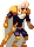


É onde você renasce e de onde toda partida sai. Aqui não há inimigos nem relógio. O mapa sorteado e a contagem só começam quando você atravessa o arco, no fim dela.This is where you are reborn and where every run leaves from. There are no enemies and no clock here. The random map and the count only start when you cross the arch at its end.
| LugarPlace | Para que serveWhat it does |
|---|---|
| Os MantosThe Cloaks | Troca aparência e croma, na hora.Changes skin and chroma on the spot. |
| O PoçoThe Well | Escolhe uma mutação para começar. Três estão abertas; as outras abrem depois que você as bebe num altar.Picks a starting mutation. Three are open; the rest open once you drink them at an altar. |
| A CarroçaThe Wagon | Escolhe uma vantagem para a partida.Picks one advantage for the run. |
| As MarcasThe Marks | Conquistas, estatísticas e Códice.Achievements, statistics and Codex. |
| O BraseiroThe Brazier | Escolhe as Brasas do Deus e os ciclos do Novo Jogo+.Picks God's Embers and New Game+ cycles. |
| O ArcoThe Arch | Passou dele, a partida começou.Past it, the run has begun. |
O desafio do dia não passa pela Beira: é igual para todos, sem mutação nem vantagem escolhidas.The daily challenge skips the Shore: it is the same for everyone, with no chosen mutation or advantage.
Ficam em MODOS, no título. Nenhum passa pela Beira: as regras são as mesmas para todos.They are under MODES on the title screen. None goes through the Shore: the rules are the same for everyone.
| QuandoWhen | O que aconteceWhat happens |
|---|---|
| ComeçoStart | Arena fechada, inteira na tela, e nenhum frasco.A closed arena that fits the screen, and no flasks. |
| A cada 5 wavesEvery 5 waves | Um frasco de cura, que serve 2 vezes. Esta é a única fonte de frasco no modo.A healing flask that works twice. This is the only flask source in the mode. |
| A cada 10 wavesEvery 10 waves | O guardião do domínio. Vencido, abre a parada com Vigia, mercador e altares, e a porta para o domínio seguinte.The domain's guardian. Once beaten, a stop opens with the Watcher, merchant and altars, plus the door to the next domain. |
| Waves 3, 5 e 7 de cada blocoWaves 3, 5 and 7 of each block | Um equipamento nas waves 3 e 7, e um fragmento divino na 5.Gear on waves 3 and 7, and a divine fragment on 5. |
O modo não tem fim: os inimigos crescem a cada wave, e o que conta é até onde você chega. O mercador daqui só vende equipamento.The mode has no end: enemies grow every wave, and what counts is how far you get. The merchant here only sells gear.
Toda segunda-feira saem duas destas regras, com o mesmo mapa para todos até a semana virar.Every Monday two of these rules come up, with the same map for everyone until the week turns.
| RegraRule | O que mudaWhat changes |
|---|---|
| VidroGlass | Você causa o dobro de dano e leva o dobro.You deal double damage and take double. |
| CaçadaThe Hunt | Um em cada quatro inimigos vem como elite.One in four enemies comes as an elite. |
| HordaHorde | Cada inimigo vem em dobro, com 60% da vida.Every enemy comes twice, with 60% health. |
| SecaDrought | Sem frascos, mas com o dobro de vida.No flasks, but double health. |
| LuaMoon | A gravidade cai para 60%.Gravity drops to 60%. |
| VampiroVampire | Cada abate cura 4 de vida, mas os frascos curam metade.Each kill heals 4 health, but flasks heal half. |
| ArsenalArsenal | Você começa com duas armas sorteadas.You start with two random weapons. |
| MutanteMutant | Você começa com três mutações sorteadas.You start with three random mutations. |
| FortunaFortune | Ouro em dobro, mas inimigos com +30% de vida.Double gold, but enemies have +30% health. |
| BrasaEmber | Todo golpe que você leva queima, mas você causa +30% de dano.Every hit you take burns, but you deal +30% damage. |
Ouro e o que você carrega se perdem na morte. Essência entregue à Vigia, plantas, bênçãos, aparências e runas ficam.Gold and what you carry are lost on death. Essence spent at the Watcher, blueprints, blessings, skins and runes stay.
| NenhumaNone | Como da primeira vezLike the first time |
| 11 | Inimigos +40% de vida, +25% de danoEnemies +40% health, +25% damage |
| 22 | +80% de vida, +50% de dano, um frasco a menos+80% health, +50% damage, one flask fewer |
| 33 | +120% de vida, +75% de dano, um frasco a menos+120% health, +75% damage, one flask fewer |
| 44 | +160% de vida, +100% de dano, um frasco a menos · libera o final verdadeiro+160% health, +100% damage, one flask fewer · unlocks the true ending |
Liberado ao completar o final verdadeiro, e escolhido no Braseiro da Beira. São até 5 ciclos, e vencer um libera o próximo. Sempre com as 4 brasas; cada ciclo soma +25% de vida e +15% de dano aos inimigos, e alguns viram elite. Você começa com +1 em cada atributo, armas melhoradas, um frasco a mais e 50% mais essência. As inscrições e as falas da Vigia mudam.Unlocked by completing the true ending, and chosen at the Brazier on the Shore. There are up to 5 cycles, and beating one unlocks the next. Always with all 4 embers; each cycle adds +25% health and +15% damage to enemies, and some become elites. You start with +1 in every stat, upgraded weapons, one extra flask and 50% more essence. Inscriptions and the Watcher's lines change.
| AçãoAction | TecladoKeyboard | ControleGamepad |
|---|---|---|
| AndarMove | A / D · ←/→ | Analógico |
| Pular (segure = mais alto, 2× = pulo duplo)Jump (hold = higher, 2× = double jump) | Espaço | A |
| Arma 1 / Arma 2Weapon 1 / Weapon 2 | J / K · mouse | X / Y |
| Habilidade 1 / 2Skill 1 / 2 | Q / F | LB / RB |
| Rolar (invencível) e esquiva no arRoll (invincible) and air dash | Shift | B / RT |
| Beber o frascoDrink the flask | R | LT |
| Usar / pegarUse / pick up | E | ↑ |
| Mergulho (no ar)Dive (in the air) | S + J | ↓ + X |
| Mapa (segure)Map (hold) | M / Tab | Select |
| PausaPause | Esc | Start |